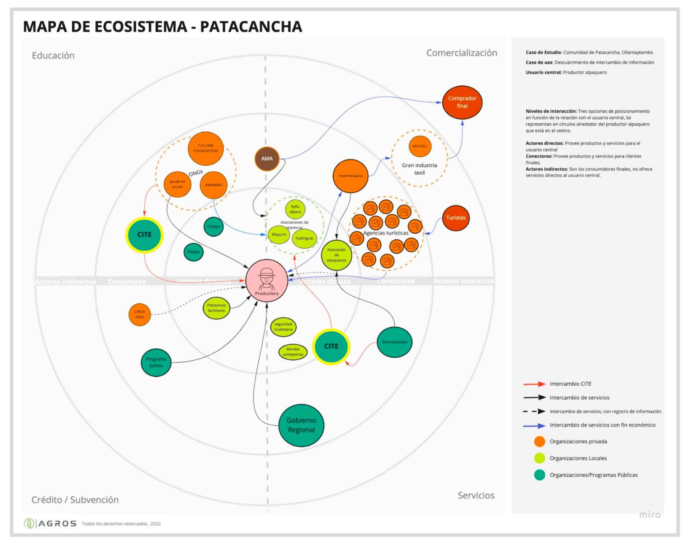

Inkabank
UI/UX Designer end-to-end — research y diseño
Diseñé de cero una solución de cambio de divisas, con UI kit completo y una decisión de marca entre dos direcciones distintas.
SUS 85/100 · vs. 68 promedio industria Ver proyectoConecto necesidades reales de usuario con objetivos de negocio en productos B2B/B2C complejos — seguros y fintech.
Traduzco objetivos de negocio y necesidades reales de usuario en soluciones escalables — del research a la documentación para desarrollo. Vengo de la docencia artística y el teatro, de ahí mi enfoque narrativo.
AI design aplicado a producto — Figma Make, Claude, Stitch.
Buen diseño es tan poco diseño como sea posible.
UI/UX Designer end-to-end — research y diseño
Diseñé de cero una solución de cambio de divisas, con UI kit completo y una decisión de marca entre dos direcciones distintas.
SUS 85/100 · vs. 68 promedio industria Ver proyectoUI/UX Designer end-to-end (research + diseño)
App de registro de parcelas para zonas rurales de baja cobertura y conectividad limitada — validada en campo con agricultores reales.
-50% tiempo de proceso · 30+ parcelasUI/UX Designer — diseño de sistema y componentes
Rediseñé fnamilanoforlanini.com sin versión mobile, construyendo una librería de componentes reutilizables desde cero — 9 pantallas construidas sobre el mismo sistema, sin rehacer patrones por página.
Service Designer — investigación y facilitación
Research en campo para habilitar identidad digital blockchain de productores textiles en el Valle Sagrado, Cusco — mapeo de ecosistema de actores y service blueprint de 5 etapas.

UI/UX Designer — reto de bootcamp
Sistema de componentes con estados documentados, benchmark competitivo y motion en las transiciones para reforzar feedback.
Testing visual: usuarios valoraron la estética moderna y la cercanía a la marca Banbif.
Senior Product & Service Designer
Rediseño de Home y Mis Seguros en Pacífico Seguros — 3 iteraciones sucesivas de Home desde 2023, cada una sobre un aprendizaje distinto.
Incremento en autogestión y reducción de dependencia del call center (cifras exactas bajo confidencialidad de negocio).